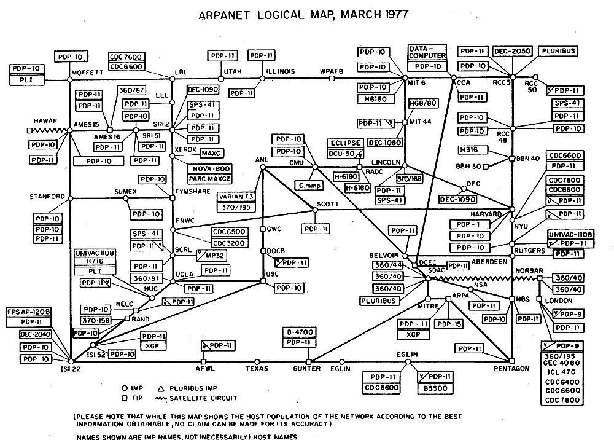

Directions: Fill in the chart as we study each stage of the lesson. Keep this page in your notebook. You will use it again on the review day before the unit test.

| Stage | What changed | The evidence (date or number) | Who it reached, and who it missed |
|---|---|---|---|
| The machine | |||
| The network | |||
| The boom and the bust | |||
| The news world | |||
| The divide |
One reach judgment. In two or three sentences, state which stage of the chart reached furthest into ordinary life by 2010, and name the row that most limits your answer.
| Stage | What changed | The evidence (date or number) | Who it reached, and who it missed |
|---|---|---|---|
| The machine | The personal computer carried computing out of institutions and into daily life; office work changed task by task as typing pools and drafting tables gave way to screens. | Households with a computer rose from about 8 percent in 1984 to about 51 percent in 2000, per the Census Bureau. | Office workers and households with the money to buy in first; access at home lagged for lower income households throughout. |
| The network | The Internet joined home computers into a public means of communication, commerce, and publication; Section 230 of the 1996 act shielded the services that carried the public's words. | Household Internet access rose from about 18 percent in 1997 to about 42 percent in 2000 and about half by 2001, per the Census Bureau. | A majority of households by 2001, reached in about four years of mass adoption; the other half of households waited. |
| The boom and the bust | E-commerce grew from almost nothing into a central part of retail while investors bid Internet stocks to a peak and then erased the paper wealth in the crash. | The NASDAQ composite peaked at 5,048 on March 10, 2000, and fell about 78 percent by October 2002. | Shoppers kept the commerce; investors and employees of failed firms paid for the speculation. The network itself remained in use. |
| The news world | Cable news ran around the clock, talk radio grew national after 1987, newspapers lost advertising online, and social media put publication in every pocket. | CNN founded June 1, 1980; Fairness Doctrine repealed 1987; rival cable channels 1996; social media from the middle 2000s and the smartphone after 2007. | Reached nearly everyone who watched, listened, or read, but no longer in one common edition; audiences sorted by tendency, as the surveys measured. |
| The divide | Access to the whole transformation followed lines of income, education, age, and place, even as access grew in every measured group. | NTIA surveys: household access rose from 26.2 percent in December 1998 to 41.5 percent in August 2000, while the highest income households stood about twenty times as likely to be online as the lowest in the 1998 data. | It missed, above all, lower income households, adults with less schooling, older Americans, and rural households at every income. |
One reach judgment. Strong answers name a stage, support it with the chart's evidence, and concede the divide row as the limit on any claim of universal reach. A network answer cites the speed of household adoption between 1997 and 2001. A machine answer cites the longer arc from 1984 and the rewriting of office work. A news answer cites the fact that the news world changed even for Americans who never bought a computer. Any of the three earns full credit when the evidence is accurate and the limiting row is named.